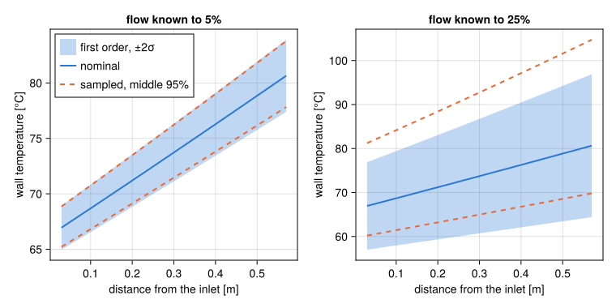
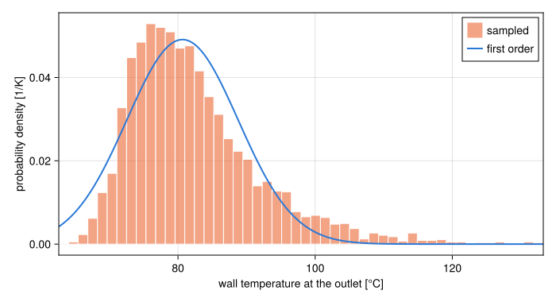

Uncertainty quantification
A model's inputs are known to some accuracy: a power calibrated to a few percent, a gap machined to a tolerance, an inlet temperature read off a thermocouple. The UQ module answers how much that moves the outputs, to first order, the way Python STREAM's stream.analysis.UQ does. Propagate input uncertainties shows how to use it.
Two kinds of uncertainty
An Uncertainty splits what is known about an input into a systematic part and a statistical part. The systematic part is a bias: a calibration that reads high, or a tolerance that every plate in a batch shares. The statistical part is a standard deviation: scatter between measurements, independent from one to the next. Both can be given relative to the nominal value or in the input's units.
They propagate differently. When the inputs move from their nominal values $x_0$ by $Δx$, the outputs move as
\[y(x_0 + Δx) ≈ y(x_0) + J \, Δx\]
with $J$ the Jacobian at $x_0$, $J_{ij} = ∂y_i/∂x_j$, so that $J_{ij} Δx_j$ is in the units of $y_i$. A bias $s$ moves an output by $J \, s$, and for a vector input, such as a temperature per cell, all of its entries move together. A standard deviation $σ$ gives an output the standard deviation $(∑_j (J_{ij} σ_j)^2)^{1/2}$ when the entries are independent. uq returns both. Different inputs are taken as independent, so their systematic contributions add as magnitudes and their statistical ones in quadrature. This matches what Python STREAM computes, and the test suite checks the two codes against each other on the same inputs.
How the two are combined into an acceptance criterion is a matter for the safety analysis. Research reactor practice expresses the same idea as hot channel factors, applied either multiplicatively or statistically (International Atomic Energy Agency, 1980); see Margins.
Where the derivatives come from
Python STREAM takes $J$ by finite differences, solving the model again with each input moved by a relative step of $10^{-6}$. That carries two errors. Truncation is proportional to the step. The solver's error is divided by it: a root converged to a relative tolerance of $10^{-8}$ gives derivatives good to about 1%, so the step and the tolerance have to be chosen together.
STREAM.jl differentiates instead. ForwardDiff carries dual numbers, a value with its derivatives along each input, through the arithmetic of the model. The result is exact to rounding, for every input in one pass, with nothing to tune.
A steady state needs one more step, since the root it lands on comes out of an iteration rather than a formula. If $F(u, p) = 0$ are the steady equations for the unknowns $u$ and the parameters $p$, then differentiating that identity gives
\[∂F/∂u \; du/dp + ∂F/∂p = 0, \quad\text{so}\quad du/dp = -(∂F/∂u)^{-1} ∂F/∂p\]
This is the implicit function theorem. local_sensitivities solves the steady state in ordinary floating point, with whatever solver converges it, then forms both partial derivatives of $F$ at the root by ForwardDiff and solves the one linear system. The derivatives are those of the steady state itself, so they do not depend on how the solver got there: a Newton iteration and a DynamicSS integration give the same $J$. The solution handed to the output function carries $du/dp$ in its values. Reading a variable, building a ChannelState, or calling a threshold correlation then carries the derivatives through without any change to that code.
When first order is enough
First order is exact for an output that is linear in its inputs, and close for one that is smooth over the range the uncertainties span. Three things in a thermal-hydraulic model break that.
- A regime switch. The friction factor and the heat transfer coefficient change form between laminar and turbulent flow, and subcooled boiling turns on at the onset of boiling. The derivative is that of the branch the nominal state is on. An uncertainty that would take the state across the switch is not seen.
- A minimum over cells or faces. The smallest CHF ratio in a channel, or the hotter of two faces, follows one cell. The derivative is that cell's, and when an input moves the minimum to another cell the slope changes there.
- A large uncertainty. A response that curves over the range of the inputs is misjudged by its tangent, in one direction or the other.
Sampling handles all three: solve the model at inputs drawn from their distributions, and read the spread of the outputs. monte_carlo does that. A first-order result is the place to start, because it costs one solve and shows which inputs matter.
The third case is easy to see on a heated channel, whose wall rises above the coolant roughly as $1/ṁ$. That is curved, and more so the further the flow strays. Below, the same plate as in Propagate input uncertainties, with the flow known to 5% and to 25%. The first-order band is $±2σ$ around the nominal profile. The dashed lines bound the middle 95% of 500 samples.
using STREAMusing STREAM.UQusing STREAM.Components: Pump, HeatExchanger, HeatDiffusion, Slab, ChannelAndContactsusing STREAM.Assemblies: inseries, symmetric_plateusing ModelingToolkit: @named, mtkcompileusing CairoMakieusing Random: Xoshirousing Statistics: quantilen = 10geometry = Duct(0.6, Rectangular(0.067, 0.0024); heated=0.063)plate = Slab(; x=range(0.0, 0.00127; length=3), z=range(0.0, 0.6; length=n + 1), y=0.063, material=Solid(2700.0, 900.0, 180.0))@named fuel = HeatDiffusion(plate; power=3.0e4)@named ch = ChannelAndContacts(; n, geometry, g=-G_EARTH)@named cell = symmetric_plate(ch, fuel)@named pump = Pump(; ṁ0=0.4)@named hx = HeatExchanger(40.0)@named loop = assembly([inseries(pump, hx, cell.ch, pump), pump.outlet.p ~ 1.7e5], pump, hx, cell)sys = mtkcompile(loop)prob = SteadyUQ(sys, [], [sys.pump.ṁ0]; output=sys.cell.ch.T_wall_left)s = local_sensitivities(prob)z = ((1:n) .- 0.5) .* 0.6 ./ nfig = Figure(size=(760, 380))upper_gap = Float64[]for (k, σ) in enumerate((0.05, 0.25)) flow = sys.pump.ṁ0 => Uncertainty(statistical_relative=σ) y, stat = s.nominal, uq(s, flow).stat sampled = monte_carlo(prob, flow; n=500, rng=Xoshiro(1)) low = quantile.(eachrow(sampled.samples), 0.025) high = quantile.(eachrow(sampled.samples), 0.975) push!(upper_gap, maximum(high .- (y .+ 2stat))) ax = Axis(fig[1, k]; title="flow known to $(round(Int, 100σ))%", xlabel="distance from the inlet [m]", ylabel="wall temperature [°C]") band!(ax, z, y .- 2stat, y .+ 2stat; color=("#2a78d6", 0.3), label="first order, ±2σ") lines!(ax, z, y; color="#2a78d6", linewidth=2, label="nominal") lines!(ax, z, low; color="#eb6834", linewidth=2, linestyle=:dash, label="sampled, middle 95%") lines!(ax, z, high; color="#eb6834", linewidth=2, linestyle=:dash) k == 1 && axislegend(ax; position=:lt)endfig
At 5% the two agree. At 25% the samples reach further above the nominal profile than below it, since a low flow heats the wall by more than a high flow of the same distance cools it, and the symmetric first-order band understates the hot side:
@assert upper_gap[2] > 0 && upper_gap[2] > 10 * abs(upper_gap[1])The distribution of one output shows the same thing. At the outlet, with the flow known to 25%, the samples have a long tail towards high temperatures, from the draws with the least flow, and the normal distribution of first order, symmetric by construction, has none:
using Statistics: meanflow = sys.pump.ṁ0 => Uncertainty(statistical_relative=0.25)outlet = monte_carlo(prob, flow; n=4000, rng=Xoshiro(2)).samples[end, :]μ, σ = s.nominal[end], uq(s, flow).stat[end]# The axis ends at the 99.5th percentile: the few draws with the flow cut by more than half# reach far past it.low, high = minimum(outlet), quantile(outlet, 0.995)fig = Figure(size=(700, 380))ax = Axis(fig[1, 1]; xlabel="wall temperature at the outlet [°C]", ylabel="probability density [1/K]")hist!(ax, outlet; bins=range(low, maximum(outlet) + 1; step=(high - low) / 50), normalization=:pdf, color=("#eb6834", 0.6), strokewidth=1, strokecolor=:white, label="sampled")xs = range(low, high; length=300)lines!(ax, xs, @. exp(-(xs - μ)^2 / (2σ^2)) / (σ * sqrt(2π)); color="#2a78d6", linewidth=2, label="first order")xlims!(ax, low, high)axislegend(ax; position=:rt)fig
The mean of the samples sits above the nominal value, which first order cannot show:
@assert mean(outlet) > μTransients
A transient is differentiated by carrying the dual numbers through the integration, so the solver controls the error of the derivatives along with that of the values. A run that starts from a steady state takes that state's derivatives with it. Where an override at the start, such as a cut in the pump head, moves the algebraic states, they are solved again from the differential states, which hold their values, and their derivatives come from the same implicit function theorem applied to the algebraic equations alone.
A model with a StateMachine cannot be differentiated: the machine keeps its trip time outside the problem, so a derivative with respect to a setpoint would come back as if the trip never moved. It can be sampled, each run tripping where it trips, and Propagate input uncertainties shows the distribution of a trip time that way. Moving the trip time into the problem would let the derivatives through too; GAPS.md in the repository tracks it.